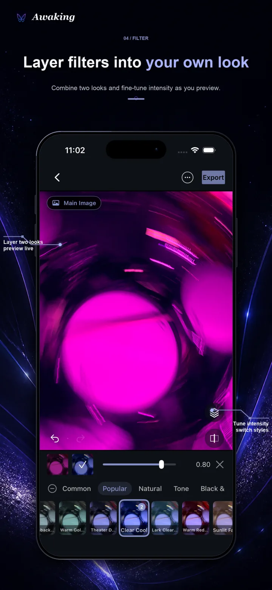
01 · FILTER STACK
Build a tone that feels like yours
Combine two filters and tune each intensity, instead of letting one preset make every decision.
On-device photo editor · iPhone & iPad
Layer filters, shape local areas, manage every adjustment, and export with confidence. Awaking helps you build a look first, then place change exactly where it belongs.
Available on the App Store
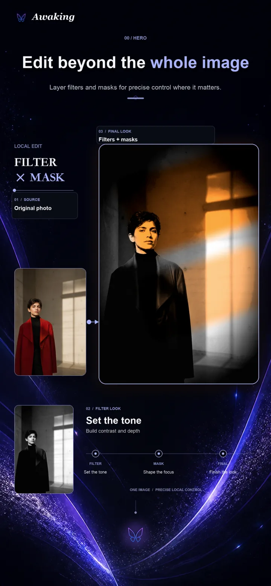
Filter × Mask × Layers
01 · Local creation
Filters establish direction, masks decide where change happens, and layers keep multiple adjustments organized. Together they form one editable creative path.

Combine two filters and tune each intensity, instead of letting one preset make every decision.
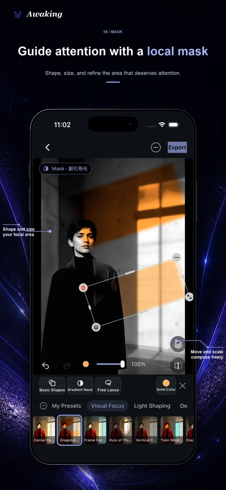
Use shapes, gradients, and lasso masks to keep filters and color adjustments inside a local area.
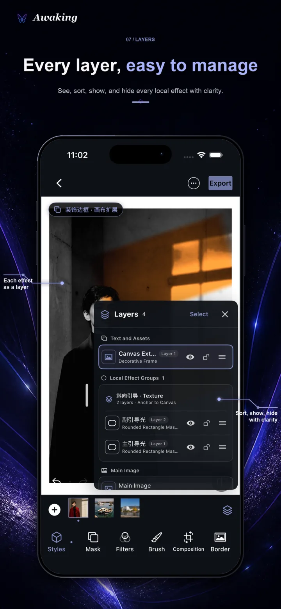
Review, hide, and organize multiple adjustments, then return to any step when the image needs more.
02 · Where to begin
Awaking offers more than an empty editor. Create from Home, or revisit an authorized photo in Memory Flow, try a recommended direction, and decide whether to continue.
Choose a photo, open Mask Design, or browse inspiration. The main creative paths stay close to the first screen.
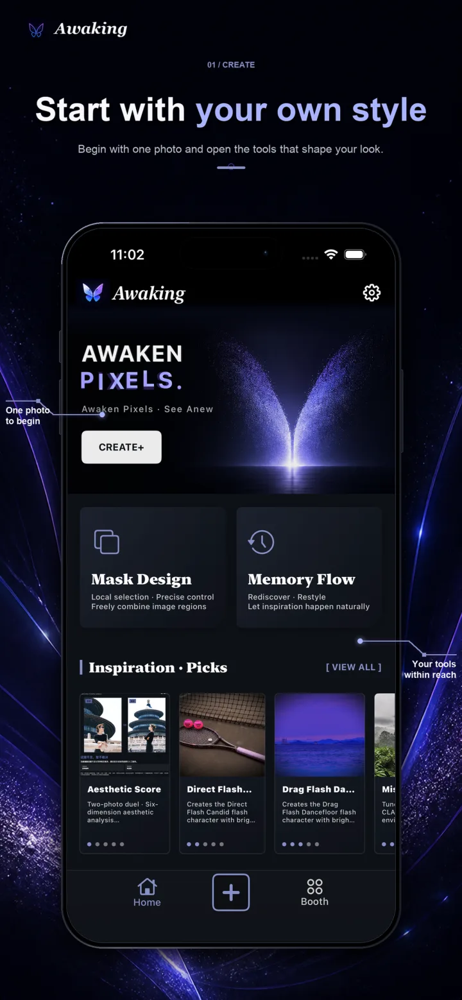
Browse within the Photos access you grant, preview recommended looks, then save inspiration, keep editing, or simply move on.
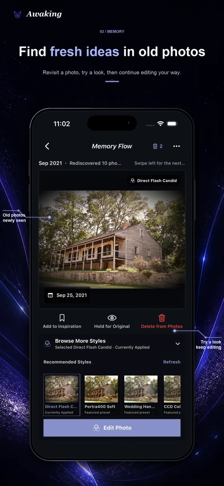
03 · See the difference
Aesthetic Duel offers a six-dimension creative reference. Smart Stitching connects overlapping views of the same scene. Both support judgment rather than replace it.
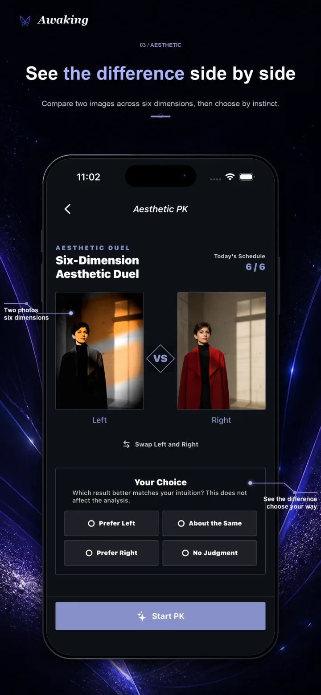
Awaking looks for connections among photos of the same scene. Check the input conditions, review the stitched result, and keep the originals unchanged.
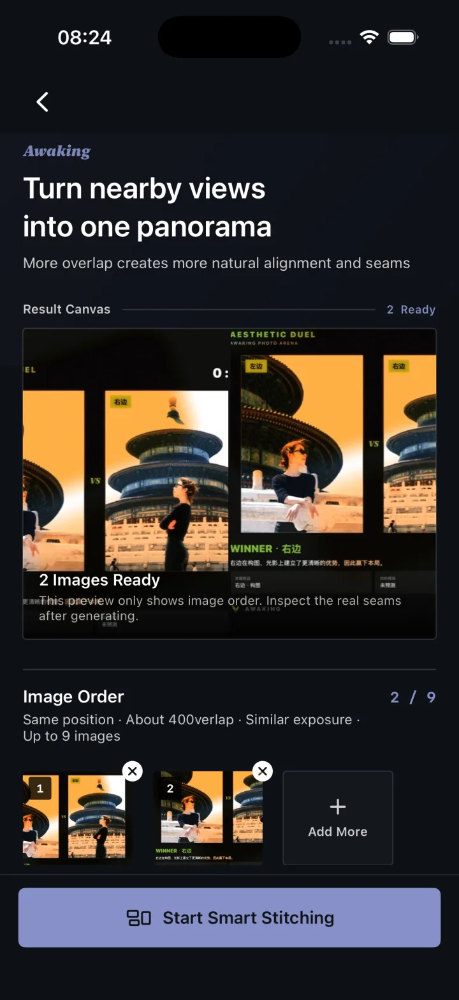
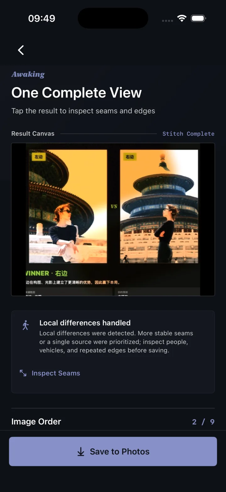
04 · A complete workflow
Find a direction quickly, refine it locally, organize the work, and choose the export that fits the result.
Choose a photo from your library and enter the editor.
Set direction with filters, presets, color, and composition.
Place effects with shape, gradient, lasso, imported, or brush masks.
Manage layers, drafts, and finished work without losing the path.
Check the result, save to Photos, or use the system share sheet.
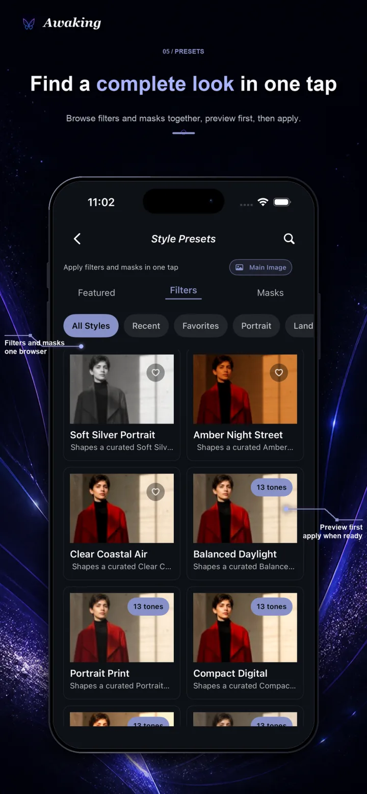
Apply a preset for direction, then keep refining the individual controls.
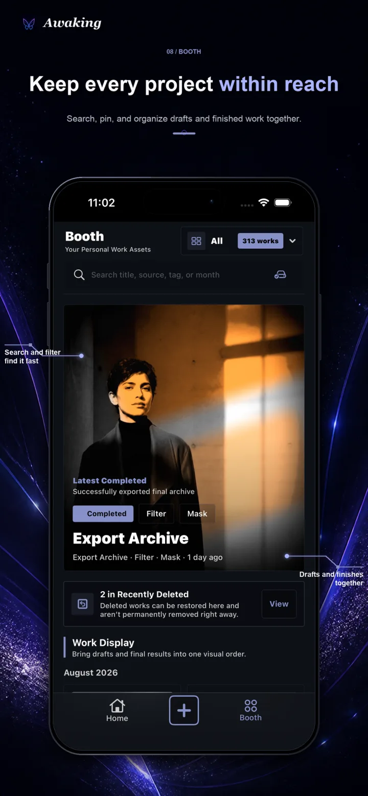
Keep drafts and finished work in Booth, then return when an edit still needs more.
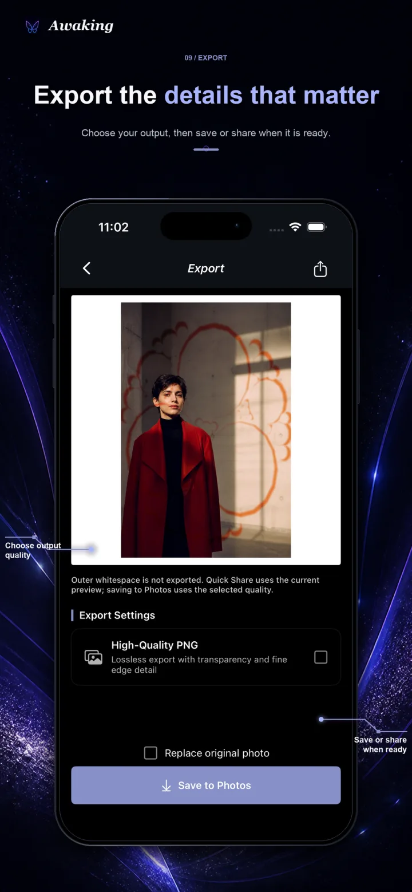
Free users can export a watermark-free standard JPEG. Awaking Pro adds high-quality PNG, batch export, and replace-original options.
On-device by default
Awaking does not require an account or automatically upload photos, masks, edits, aesthetic ratings, or export results to the developer’s servers. Apple processes purchases through StoreKit. Browsing alone never changes your Photos library; saving, sharing, and deletion remain actions you confirm.
05 · Free & Pro
The free path is not a demo. Awaking Pro builds on it with selected advanced content and more professional export choices.
No account and no subscription required.
Monthly, yearly, and Lifetime options unlock the same Pro entitlement. Apple’s purchase sheet controls current pricing and offer eligibility.
Awaking · iPhone & iPad
Available on the App Store